Hotpsot Finder¶
This tool is used to find CAE hotspot zones as described in the Hotspot Finder Settings panel.
Hotspot Finder
User has quick options to find hotspots.
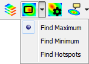
Find Maximum |
Allows user to find maximum value in user defined region |
Find Minimum |
Allows user to find minimum value in user defined region. |
Find Hotspots |
Allows user to find hotspots according to the settings. |
Hotspot Settings panel
Click hotspot settings icon 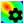 from CAE toolbar to pop up the panel.
It consists of three groups of functionalities Filters, Viewpoints and Compare.
Filter settings helps user to set value range constraints.
Viewpoints settings helps user to save the finding with proper orientation into viewpoints.
Compare settings helps user to define how the model results to be compared.
Filter Settings
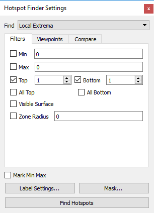
Viewpoint Settings
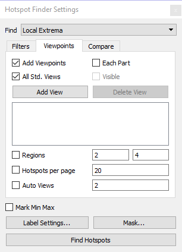
Compare Settings
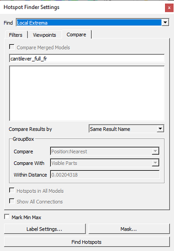
Local Extrema represents a mechanism to identify the hot spots. VCollab identifies the local maximums and minimums as the hot spots instead of nodes with maximum or minimum values. A local maximum is a node/element whose value is higher than all its neighbors and a local minimum is a node/element whose value is lower than all its neighbors.
Global Extrema represents a mechanism to identify the nodes or elements with global maximum or minimum values.
Range Cluster finds hotspots in a given cluster defined based on the range. Clusters if min and max are not given, legend’s first interval values will be taken as the cluster range.
Various options and inputs that are provided in this dialog are explained below.
Hot spot Range(Min & Max) When a range is specified, VCollab filters the nodes whose result values lie out of this range. They are never considered as hot spots. Hot spots are searched among only the nodes whose values satisfying the range conditions.
Hot spot Count (Top and Bottom) represents the number of hot spots that need to be generated. A hot spot can be a node, an element or an area in the computational domain with extreme values of a result i.e. nodes/elements/areas with maximum values and minimum values. Local minima, local maxima or nodes/elements/areas with high gradients can also be considered as hot spots in certain situations. As the definition of hot spots can be situational, we intend to provide various mechanisms to identify hot spots in VCollab. User can choose the right mechanism based on his understanding of the problem to identify the hot spots. Hotspots top and bottom labels are differentiated by label border colors, which are red and blue respectively. User is allowed to change the colors.
All Top If top value is v and there are multiple IDs with the same value v, then hotspot finder considers and displays only one of these IDs if All Top is unchecked. If this option is checked, hotspot finder displays all IDs with the same top values.
All Bottom this option does the same as All Top does, except that it considers bottom values.
Mark MinMax this option highlights the labels of maximum of top labels and minimum of bottom labels. Maximum and Minimum labels are highlighted with text colors of Red and Blue respectively.
Zone Radius The Zone radius option that is provided to facilitate the user to avoid locating hot spots next to each other. Once a hot spot is found, VCollab skips all the nodes within the specified radius of it during its search for the next hot spot.
Visible Surface displays the visible labels in the current view.
Viewpoints Options this helps user to select either part wise viewpoints or multi view points for a single scene.
Add View Points generates viewpoints according to the succeeding options.
Each Parts If this option is enabled and If top hot spot count is specified as ten, and if the mode consists of 5 parts, then the generated view path consists of five view points (one per each part) with each view point consisting of ten hot spots on the corresponding part. There will not be any change in view and orientations. In each viewpoint, one part is visible and others are hidden. Regions will be set as 1,1 for a better view as this option enabled.
Visible option filters the parts based on its visibility and lists the parts in the list.
All Std. Views This option will include 6 standard view points (X, Y, Z,-X,-Y and -Z) to each part or current scene based on Each Part option. user can filter viewpoints by check or uncheck the options. if user do not want X view of part 1, then user can uncheck the check box intersection part row and view column. User can check or uncheck the entire column or row in one shot.
Add View Whenever user click this option, it will add current camera view or user view as an option with standard views in the GUI. User can select or unselect if necessary. To remove, set unchecked on the view point will remove the view on generation of viewpoints.
Delete View Allows user to delete the user defined view.
Regions The model area can be split into number of pieces and displayed each piece focused with that region hotspots. (2,4) means to split the model area into vertically into 2 and horizontally into 4, so the total regions are 2x4=8. For example, the following bracket model is discretized into 2x4=8 regions as below. 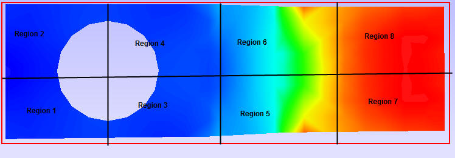
Hotspots per page User can customize the viewpoint with number of hotspots per page. if there are 45 hotspots on the model, user can customize it with three viewpoints, first 40 hotspots in first and second viewpoints each with 20 hotspots, remaining 5 in the last viewpoint.
Auto Views
When this option is not selected, same hotspots may be displayed in multiple user defined views. This way it is difficult to check for the visibility of all hotspots.
When this option is selected, only visible hotspot labels are displayed in first user defined view and the visible hotspots from remaining hotspots are displayed in the next user defined views.
If ‘number of auto views’ are specified, the system will try to generate that many new views (based on remaining hotspots) and display only visible hotspots.
All the remaining hotspots (not visible in any of the above views) are displayed in the last viewpoint.
Compare Options This option is visible only when at least one dataset is merged with existing one. It is used to compare results of merged datasets.
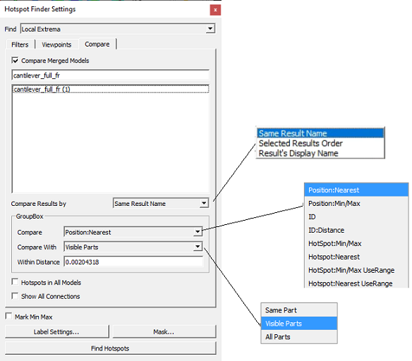
This feature will compare the results between merged CAE models. A CAE model is set of analysis results carried out once. VCollab allows to merge multiple analysis. First it generates hotspots/min max labels for the current dataset. The option ‘Hotspots In All Models’ finds hotspots for each model. Then it adds results from merged datasets as rows or columns based on template selected.
Compare Results By
VCollab provides different options for result comparison.
Same Result Name Compares Result A of model 1 with Result A of model 2.
Selected Results order Compares result 1, result 2, etc. of model 1 with result 1, result 2, etc. of model 2 by order though they are of different types.
Results Display Name Comparess results with same display names across all models.
Compare Modes
The following methods are available to user to compare results.
Position : Nearest Compares one hotspot Node with a Node from another model based on position
Get nearest Node from the other model with distance < Radius (‘Within Distance’).
Select this nearest node for comparison.
Position : Min/Max Compares one hotspot Node with a Node from another model based on position
Get all Nodes in other model with distance < radius.
From this set of Nodes select one Node for comparison
For Top hot spot select Node with Max value
For Bottom hotspot select Node with Min value
ID Compares the hot spot Node with a Node from another model having same id.
ID : Distance Compares the hot spot Node with a Node from another model having same id
AND distance < radius
Hotspot: Min/Max Compares the hotspot Node with a hot spot Node from another model
Get all hotspot nodes in other model with distance < radius
Here hot-spots in second model are local peaks (without any range limit)
From this set of hotspots select one hot spot for comparison
For Top hot spot select top hotspot with Max value
For Bottom hotspot select bottom hot spot with Min value.
Hotspot: Nearest Compares the hot spot Node with a hot spot Node from another model.
Get all hotspot nodes in other model with distance < Radius.
Here hot-spots in second model are local peaks (without any range limit).
From this set of hotspots select nearest hotspot (of same type) for comparison.
Hotspot: Min/Max User range Compares the hotspot Node with a hot spot Node from another model
Get all hotspot nodes in other model with distance < radius.
Here hot-spots in second model are also filtered based on range (same as first model).
From this set of hotspots select one hot spot for comparison.
For Top hot spot select top hotspot with Max value.
For Bottom hotspot select bottom hot spot with Min value.
Hotspot: Nearest User range Compares the hot spot Node with a hot spot Node from another model
Get all hotspot nodes in other model with distance < Radius
Here hot-spots in second model are also filtered based on range (same as first model)
From this set of hotspots select nearest hotspot (of same type) for comparison
Compare With
Same Part - look the above constraint in same part of other model.
Visible Parts - look the above constraint in any visible part of other model.
All Parts - look the above constraint in all parts.
Show All Connections
Shows the all linking lines between the label and its attached positions.
This helps user to Label Settings customize the list of results to be shown in the label.
Select a probe label type.
Template type helps user to display values in a predefined templates (formats).
Select Results helps user to select required result names to be displayed in the label.
Display Settings allows user to edit result display names and highlight or format probe tables based on a condition. The condition is to format the probe table if the table value of a particular result is either less than a user defined minimum value or greater than user defined maximum value. User has to select a model, result, change the display name of model or/and result if necessary and enter the min/max of user range. Further user can select the different color for lower and upper values. All the probe tables of which values are beyond user range will be highlighted with border color. Text color of cell will be either min value color or max value color based on the value. By checking ‘Apply to All Models’ option, these settings can be carried out to all CAE models. For example,
Let the user range be 2.0 to 8.0.
Let the min value color be blue and max value color be green.
Let the border color be red.
All the probe tables of which values are beyond range are highlighted with border color, red.
Text color of tables of which values are less than min value 2.0 will be min value color blue.
Text color of tables of which values are less than min value 8.0 will be min value color green.
Row Header This option is to display either dataset name or result/instance name in the first column of labels. Each row denotes what result/instance for template1 and denotes what dataset in template2.
Column Header** ** This option is to display either dataset name or result/instance name in the top of labels. Each column denotes what dataset for template1 and denotes what result/instance in template2. Reordering result. To rearrange the results order in the labels, click on the ‘selected results list box’ and drag the result and drop where you want to place.
Abbreviation Legend this option displays the legend or abbreviation and its acronym in a table separately. It displays a table for short letters for results used in the labels. It can be moved like other labels.
Display Names User can edit or modify the dataset display name using these interfaces.
ID this option enables nodal or element ID in the label display.
Note: Header options are meaningful for template 1 when at least one dataset is merged with existing one.
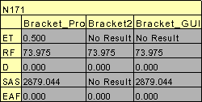
Mask allows user to mask set of nodes and elements from the process in the node set manager panel.
Mask panel lists user created node or element sets in one side.
Select node sets to be masked for hotspot finding process using check box provided for nodesets
Note: Masking is not supported for Elemental Result.
Find Hotspots Generates hotspots for the model according to above information.
How to find hotspots after hotspot settings?
Click ‘Hotspot Finder’ icon 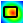 from CAE toolbar, which enables mouse mode to hotspot finder.
Select a region to find hotspots either by rectangular window or by polygon selection.
If polygon selection is off, then selection default is by rectangular window.
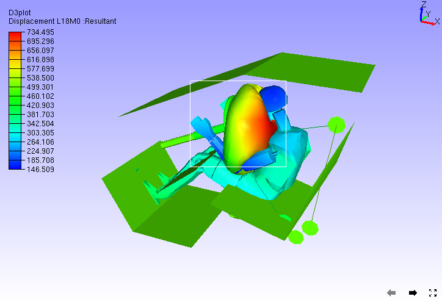
Hotspot CAE values are displayed as labels as follows.
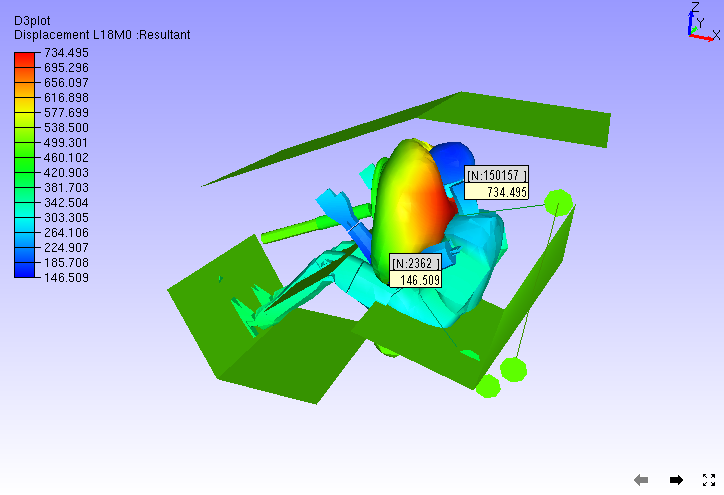
Hotspot Range Cluster¶
Cluster based on range.
Example: Consider the following airbag model,
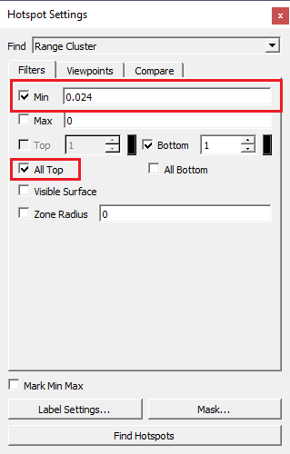
For Top hotspot, range is defined by Filter Min value, ( 0.024 ). To visualize the cluster defined by (> 0.024) , enter the same value in Legend as in the image above. User can see two red clusters. This algorithm finds maximum value for each cluster and shows the labels.
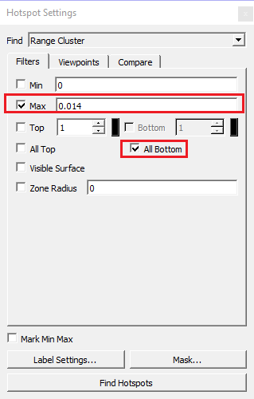
Similarly for Bottom hotspot, range is defined by Filter Max value ( 0.014 ). To visualize the cluster defined by (< 0.014), enter the same value in Legend as in the image above. User can see three blue clusters. This algorithm finds minimum value for each cluster and shows the labels.